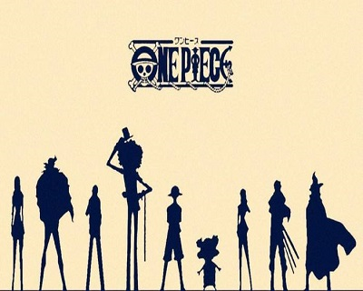

<!doctype html>
<html lang="en">

<head>
    <meta charset="UTF-8">
    <title>仿flash的图片轮播效果</title>
    <link rel="stylesheet" type="text/css" href="style/main.css">
    <script type="text/javascript" src="js/move.js"></script>
    <script type="text/javascript">
    function getByClass(oParent, sClass) {
        var aEle = oParent.getElementsByTagName('*');
        var aResult = [];
        for (var i = 0; i < aEle.length; i++) {
            if (aEle[i].className == sClass) {
                aResult.push(aEle[i]);
            }
        }
        return aResult;
    }
    window.onload = function() {
        var oDiv = document.getElementById('play_imges');
        var oBtnPrev = getByClass(oDiv, 'prev')[0];
        var oBtnNext = getByClass(oDiv, 'next')[0];
        var oMarkLeft = getByClass(oDiv, 'mark_left')[0];
        var oMarkRight = getByClass(oDiv, 'mark_right')[0];

        var oDivSmall = document.getElementById('small_imgs');
        var oUlSmall = oDivSmall.getElementsByTagName('ul')[0];
        var aLiSmall = oDivSmall.getElementsByTagName('li');

        var oDivBig = document.getElementById('big_imgs');
        var oUlBig = getByClass(oDivBig, 'big_pic')[0];
        var aLiBig = oUlBig.getElementsByTagName('li');

		var nowZIndex=2;
        // 记录当前的图片
        var now = 0;
		
		oUlSmall.style.width=aLiSmall.length*aLiSmall[0].offsetWidth+'px';

        /*上一张下一张的按钮
                要求实现鼠标移入左遮罩区域时，显示prev的图片，反之。*/
        oBtnPrev.onmouseover = oMarkLeft.onmouseover = function() {
            startMove(oBtnPrev, 'opacity', 100);
        };
        oBtnPrev.onmouseout = oMarkLeft.onmouseout = function() {
            startMove(oBtnPrev, 'opacity', 0);
        };
        oBtnNext.onmouseover = oMarkRight.onmouseover = function() {
            startMove(oBtnNext, 'opacity', 100);
        };
        oBtnNext.onmouseout = oMarkRight.onmouseout = function() {
            startMove(oBtnNext, 'opacity', 0);
        };

        // 点击小图，就可以在大图中显示
        for (var i = 0; i < aLiSmall.length; i++) {
            aLiSmall[i].index = i;
            aLiSmall[i].onclick = function() {
                if (this.index == now) return;
                now = this.index;
                tab();
            }

            aLiSmall[i].onmouseover = function() {
                startMove(this, 'opacity', 100);
            }
            aLiSmall[i].onmouseout = function() {
                if (this.index != now) {
                    startMove(this, 'opacity', 30);
                }

            }
        }
        // 完成大图切换功能
        function tab() {
			aLiBig[now].style.zIndex=nowZIndex++;
            for (var i = 0; i < aLiSmall.length; i++) {
                startMove(aLiSmall[i], 'opacity', 30);
            }
            startMove(aLiSmall[now], 'opacity', 100);

            aLiBig[now].style.height = 0;
            startMove(aLiBig[now], 'height', 320);

            if (now == 0) {
                startMove(oUlSmall, 'left', 0);
            } else if (now == aLiSmall.length - 1) {
                startMove(oUlSmall, 'left', -(now - 2) * aLiSmall[0].offsetWidth);
            } else {
                startMove(oUlSmall, 'left', -(now - 1) * aLiSmall[0].offsetWidth);
            }
        }

        oBtnPrev.onclick = function() {
            now--;
            if (now == -1) {
                now = aLiSmall.length - 1;
            }

            tab();
        }

        oBtnNext.onclick = function() {
            now++;
            if (now == aLiSmall.length) {
                now = 0;
            }
            tab();
        }
        var timer = setInterval(oBtnNext.onclick, 2000);

        oDiv.onmouseover = function() {
            clearInterval(timer);
        };
        oDiv.onmouseout = function() {
            timer = setInterval(oBtnNext.onclick, 2000);
        };

    }
    </script>
</head>

<body>
    <div id="play_imges">
        <div id="big_imgs">
            <ul class="big_pic">
                <div class="prev"></div>
                <div class="next"></div>
                <a class="mark_left" href="javascript:;"></a>
                <a class="mark_right" href="javascript:;"></a>
                <li style="z-index:1;></li>
                <li></li>
                <li></li>
                <li></li>
                <li></li>
                <li></li>
            </ul>
        </div>
        <div id="small_imgs">
            <ul class="small_pic" style="width: 390px;">
                <li style="filter: 100; opacity: 1;"></li>
                <li></li>
                <li></li>
                <li></li>
                <li></li>
                <li></li>
            </ul>
        </div>
    </div>
</body>

</html>
